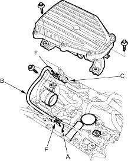
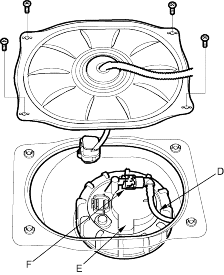

Pay attention to the following:
- The fuel feed hose (B), fuel tube (D) and quick-connect fittings (F) are not heat-resistant; be careful not to damage them during welding or other heat-generating procedures.
- The fuel feed hose (B), fuel tube (D) and quick-connect fittings (F) are not acid-proof; do not touch them with a shop towel which was used for wiping battery electrolyte. Replace them if they came into contact with electrolyte or something similar.
- When connecting or disconnecting the fuel feed hose (B), fuel tube (D) and quick-connect fittings (F), be careful not to bend or twist them excessively. Replace them it damaged.


A disconnected quick-connect fitting can be reconnected, but the retainer on the mating pipe cannot be reused once it has been removed from the pipe. Replace the retainer when- replacing the fuel rail.
- replacing the fuel pipe.
- replacing the fuel pump.
- replacing the fuel filter.
- replacing the fuel gauge sending unit.
- it has been removed from the pipe.
- it is damaged.
PART
MANUFACTURER
RETAINER COLOUR
ENGINE COMPARTMENT
TOKAI
GREEN
FUEL TANK UNIT
SANOH
WHITE